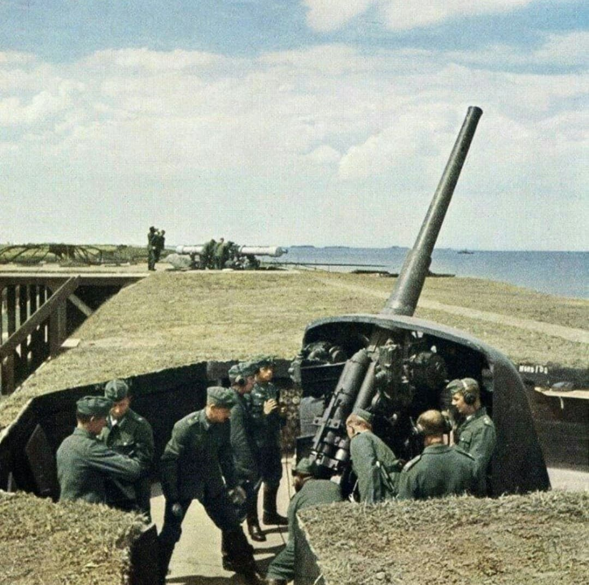
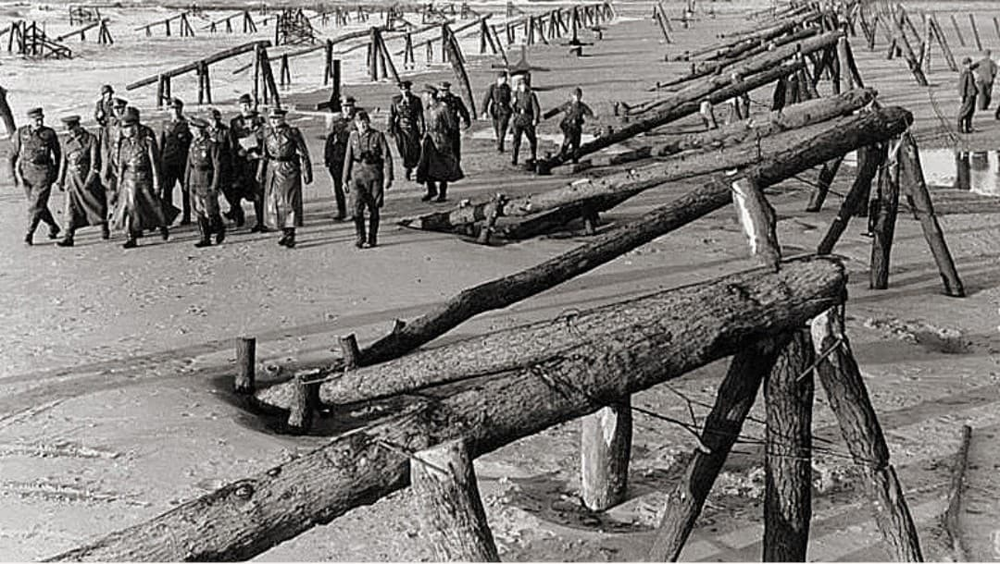

Le Mur de l’Atlantique est un immense système de fortifications côtières construit par l’Allemagne nazie entre 1942 et 1944 pour protéger l’Europe occupée contre un débarquement allié venu de Grande-Bretagne. Il s’étend de la Norvège jusqu’à la frontière espagnole, couvrant des milliers de kilomètres de côtes.
Présenté par la propagande comme une “Forteresse Europe” imprenable, ce mur est en réalité une mosaïque de positions défensives plus ou moins puissantes, concentrées autour des ports et des secteurs jugés stratégiques.

Après l’entrée en guerre des États-Unis en 1941, les dirigeants allemands savent qu’un débarquement allié en Europe de l’Ouest est probable. Hitler veut empêcher toute invasion en renforçant massivement les côtes, afin de dissuader les Alliés ou de les repousser dès leur arrivée.
Le Mur de l’Atlantique doit protéger les grands ports (Brest, Cherbourg, Saint-Nazaire, Le Havre, Boulogne, Dunkerque, etc.) et les zones jugées vulnérables. Il est conçu pour infliger de lourdes pertes aux forces de débarquement et gagner du temps pour l’arrivée des réserves blindées.
La construction du Mur est confiée à l’Organisation Todt, responsable des grands travaux du régime nazi. Des centaines de milliers de travailleurs sont mobilisés : prisonniers de guerre, requis du Service du Travail Obligatoire (STO), ouvriers forcés des pays occupés, mais aussi entreprises civiles.
Les fortifications suivent des plans standardisés (Régelbau) : casemates pour canons, abris pour troupes, postes de commandement, observatoires, positions de mitrailleuses, tobrouks, ouvrages antichars, etc. Des stations radar complètent le dispositif pour détecter les navires et avions ennemis.

Le Mur de l’Atlantique n’est pas un mur continu, mais un ensemble de :
– Festungen : villes forteresses fortement défendues (Cherbourg, Saint-Nazaire…)
– Stützpunkte : points d’appui renforcés
– Widerstandsnester : nids de résistance (casemates, mitrailleuses)
– Ouvrages antichars : fossés, murs, positions de canons
– Stations radar : Freya, Würzburg, etc.
– Obstacles de plage : hérissons tchèques, pieux explosifs, mines, barbelés,
“asperges de Rommel”
– Des milliers de bunkers et casemates construits
– Des millions de mètres cubes de béton utilisés
– Des centaines de kilomètres de plages minées et barbelées
– Des dizaines de ports et secteurs fortifiés
En 1943, Erwin Rommel est chargé d’inspecter les défenses côtières. Il constate que le Mur est incomplet et insuffisamment armé. Il ordonne l’installation de nouveaux obstacles de plage, la pose de mines supplémentaires, le renforcement des positions antichars et la consolidation des secteurs jugés vulnérables.
Rommel est convaincu que la bataille contre un débarquement se jouera sur les plages elles-mêmes. Il veut que les Alliés soient stoppés ou détruits avant de pouvoir établir une tête de pont.
Malgré son ampleur, le Mur de l’Atlantique présente de nombreuses faiblesses :
– Défenses inégales selon les secteurs
– Troupes parfois peu entraînées ou mal équipées
– Armement hétérogène (canons français, tchèques, soviétiques réutilisés)
– Manque de munitions et de moyens de communication
– Mauvaise anticipation : le haut commandement allemand attend un débarquement
dans le Pas-de-Calais
Le 6 juin 1944, les Alliés attaquent en Normandie, dans un secteur moins fortifié que d’autres. Si certaines positions résistent violemment (notamment à Omaha Beach), le Mur ne parvient pas à empêcher l’établissement de têtes de pont.
Pour affaiblir l’efficacité du Mur de l’Atlantique, les Alliés mettent en place une vaste opération de tromperie : Fortitude. Son objectif est de convaincre le haut commandement allemand que le débarquement aura lieu dans le Pas-de-Calais, secteur le plus fortifié du Mur, et non en Normandie.
Les Alliés créent une armée fictive, la FUSAG, prétendument commandée par le général Patton. Autour de Douvres et face à Calais et Dunkerque, ils installent des chars gonflables, des fausses batteries d’artillerie, des fausses barges de débarquement et des camps factices, visibles par la reconnaissance aérienne allemande.
De fausses communications radio et des agents doubles renforcent l’illusion. Trompé par ces indices, Hitler maintient ses meilleures divisions à Calais, permettant aux Alliés de percer les défenses du Mur en Normandie le 6 juin 1944.
Le Mur de l’Atlantique joue un rôle central dans la bataille du 6 juin 1944. Les bunkers, canons et obstacles de plage infligent de lourdes pertes aux troupes alliées, mais ne suffisent pas à stopper l’assaut. La supériorité aérienne, navale et logistique des Alliés, ainsi que la surprise sur le lieu du débarquement, réduisent l’efficacité globale du dispositif.
Après le Débarquement, de nombreuses positions du Mur sont contournées, assiégées ou abandonnées. Certaines forteresses tiennent jusqu’en 1945, mais le Mur ne remplit pas l’objectif stratégique qui lui était assigné : empêcher l’ouverture d’un front à l’Ouest.
Le Mur de l’Atlantique est l’un des symboles majeurs de la stratégie défensive allemande pendant la Seconde Guerre mondiale. Il illustre la volonté du régime nazi de figer la guerre dans une logique de forteresse, mais aussi les limites d’une défense statique face à une offensive moderne, combinant aviation, marine et logistique massive.
Aujourd’hui, de nombreux bunkers et ouvrages subsistent le long des côtes européennes. Ils sont devenus des lieux de mémoire, des sites de visite et des témoins matériels de la guerre et de l’occupation.